The Undefeated City
Porto architecture
Porto's Roman-era name, Portus Cale, is often given as the origin of the name Portugal. Locals are nicknamed tripeiros (tripe-eaters) because, the story goes, the city sent its best meat off with naval expeditions and kept the tripe, and the stew Tripas à moda do Porto is still a signature dish.
- 15Landmarks
- 1425Oldest · Church of São Francisco
- 76 mTallest · Clérigos Tower
- 10Architects
Map and Look Around
Tap a numbered pin to see that landmark from the street with Apple Look Around.
Eat and stay near
Restaurants
Hotels
From Apple Maps. Walking times are estimates from straight-line distance.
Before you go
- Fly intoFrancisco Sá Carneiro Airport (OPO)
Francisco Sá Carneiro Airport, once known as Pedras Rubras, opened in 1945 and lies about 11 km northwest of the Clérigos Tower. It handled almost 17 million passengers in 2025 and is a base for easyJet and Ryanair. Metro line E runs straight from the terminal to the city centre.
- CurrencyEuro (€)
- LanguagePortuguese
Portuguese is a Romance language written in the Latin alphabet with extra marks such as ã and ç. Greet people with 'Bom dia' (good morning) or a simple 'Olá', and say 'Obrigado' (or 'Obrigada' if you are a woman) to thank them.
- Getting aroundMetro (Light Rail)
The Porto Metro opened in December 2002 as a light rail network that runs underground in the centre and above ground out to the suburbs. Its six lines now serve 85 stations over about 70 km, and in 2013 it won Harvard's Veronica Rudge Green Prize in Urban Design.
- Where to stayFind hotels in Porto on Expedia Compare on Booking.com Vacation rentals on Vrbo
Stamped! may earn a commission when you book through these links.
- Tours and ticketsFind tours in Porto on GetYourGuide More tours on Viator
Skip-the-line tickets and guided tours of the landmarks. Stamped! may earn a commission.
15 landmarks in Porto
-
Photo: Guinness323, CC0, via Wikimedia Commons Livraria Lello
Rua das Carmelitas 144, Porto, Portugal
Livraria Lello is a bookshop so ornate that visitors queue just to step inside. The firm dates from 1881, but its two-storey shop on Rua das Carmelitas, designed by engineer Francisco Xavier Esteves, opened in 1906. The facade mixes Neo-Gothic and Art Nouveau, while inside a forked wooden staircase curls up to a gallery under a stained-glass skylight measuring 8 by 3.5 metres.
- Built
- 1906
- Architect
- Francisco Xavier Esteves
- Style
- Neo-Gothic, Art Nouveau
- Stories
- 2
- Today
- Bookshop
-
Photo: Filipe Fortes from United States, CC BY-SA 2.0, via Wikimedia Commons Casa da Música
Avenida da Boavista 604-610, Porto, Portugal
Casa da Música is a bold, angular concert hall on the Avenida da Boavista that looks nothing like its neighbours. Rem Koolhaas and his firm OMA designed it with engineers Arup, and it opened in April 2005 at a cost of about €100 million on the site of the old Boavista tram terminus. Its 1,300-seat main hall has two walls made entirely of glass, so concertgoers can look out over the city.
- Built
- 2005
- Architect
- Rem Koolhaas (OMA)
- Today
- Concert hall
-
Photo: Diego Delso, CC BY-SA 3.0, via Wikimedia Commons Clérigos Tower
Rua dos Clérigos, Porto, Portugal
The Clérigos Tower has been Porto's most famous landmark for more than 250 years. The Italian-born architect Nicolau Nasoni designed the Baroque church from 1732 to 1750 and then added the bell tower behind it between 1754 and 1763, taking inspiration from Tuscan campaniles. At 75.6 metres it towers over the old town, and visitors who climb its 240 steps through six floors are rewarded with sweeping views.
- Built
- 1763
- Architect
- Nicolau Nasoni
- Style
- Baroque
- Height
- 76 m (248 ft)
- Stories
- 6
- Today
- Bell tower and museum
-
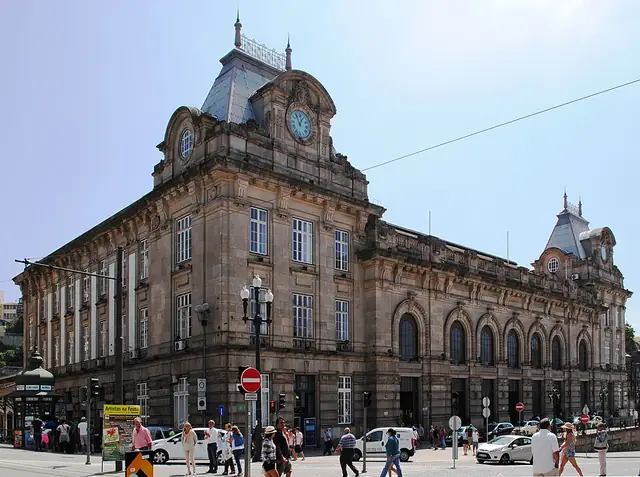
Photo: HombreDHojalata, CC BY-SA 4.0, via Wikimedia Commons São Bento Station
Praça de Almeida Garrett, Porto, Portugal
São Bento railway station is famous less for its trains than for its walls. Architect José Marques da Silva designed the French-style building on the site of a convent demolished in 1892; work started in 1904 and the station opened in 1916. Its entrance hall is covered with about 20,000 blue-and-white azulejo tiles by Jorge Colaço, filling 551 square metres with scenes from Portuguese history.
- Built
- 1916
- Architect
- José Marques da Silva
- Style
- French-style
- Today
- Railway station
-
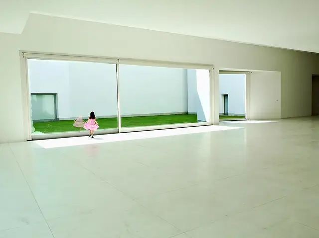
Photo: Geerd-Olaf Freyer from Aachen, Deutschland, CC BY-SA 2.0, via Wikimedia Commons Serralves Museum
Rua de Serralves 1052, Porto, Portugal
The Serralves Museum of Contemporary Art is a bright white building set in the park of the Serralves Foundation. Álvaro Siza won the commission in 1991 and the museum was inaugurated on 6 June 1999, with 14 galleries over 13,000 square metres spread across three floors. As in many of his buildings, Siza also designed the fittings, down to the lamps, handrails and door handles. The estate also holds the Art Deco Casa de Serralves, finished in 1944.
- Built
- 1999
- Architect
- Álvaro Siza
- Stories
- 3
- Today
- Museum
-
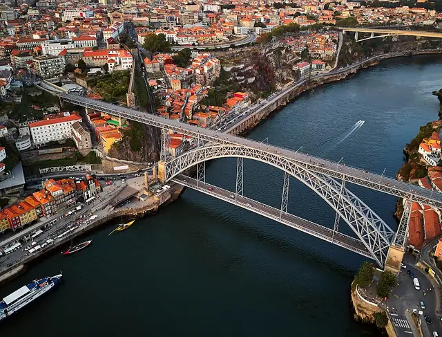
Photo: Deensel, CC BY 2.0, via Wikimedia Commons Dom Luís I Bridge
Douro River, Porto, Portugal
The Dom Luís I Bridge is the iron double-deck arch that ties Porto to Vila Nova de Gaia across the Douro. Designed by Théophile Seyrig, who had worked with Gustave Eiffel, its upper deck opened on 31 October 1886. The span of 172 metres was the longest of its kind in the world when it was built. Its lower deck sits just above the river, while the upper deck links the high banks on either side.
- Built
- 1886
- Architect
- Théophile Seyrig
- Today
- Metro, road and footbridge
-
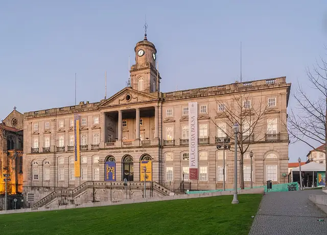
Photo: Krzysztof Golik, CC BY-SA 4.0, via Wikimedia Commons Palácio da Bolsa
Rua de Ferreira Borges, Porto, Portugal
The Palácio da Bolsa, Porto's Stock Exchange Palace, was built by the city's Commercial Association on the ruins of the São Francisco convent cloisters after a fire in 1832. Architect Joaquim da Costa Lima Júnior gave it a Neoclassical and Palladian design; work began in 1842 and the interiors were only finished in 1910. Its star attraction is the dazzling Arab Room, decorated in Moorish style between 1862 and 1880.
- Built
- 1910
- Architect
- Joaquim da Costa Lima Júnior
- Style
- Neoclassical
- Today
- Commercial association and museum
-
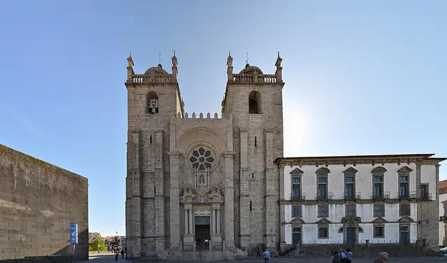
Photo: Laszlo Daroczy from Miskolc, Hungary, CC BY 2.0, via Wikimedia Commons Porto Cathedral
Terreiro da Sé, Porto, Portugal
Porto Cathedral looks more like a fortress than a church, with crenellations and two square towers on its hilltop above the old town. Building began in the 12th century and continued for centuries, so it blends a Romanesque rose window and nave, a Gothic cloister and major Baroque additions finished in 1737. It was one of the first buildings in Portugal to use flying buttresses, and King John I married Philippa of Lancaster here in 1387.
- Built
- 1737
- Style
- Romanesque, Gothic, Baroque
- Today
- Cathedral
-
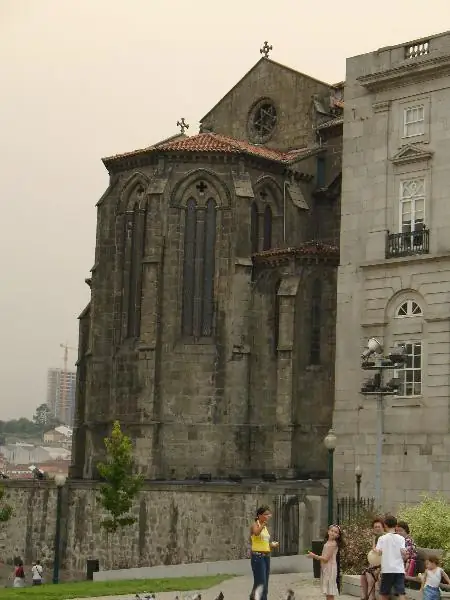
Photo: Unknown author, CC BY-SA 3.0, via Wikimedia Commons Church of São Francisco
Rua do Infante Dom Henrique, Porto, Portugal
From the outside the Church of São Francisco is Porto's finest Gothic building, plain and solid. The Franciscans began the present church in 1383 and finished it around 1425. Step inside, though, and almost every surface, from pillars to ceiling, is covered in gilded Baroque woodcarving added in the first half of the 18th century. Its altarpieces rank among the best in Portugal, and the Stock Exchange Palace stands where its cloisters once were.
- Built
- 1425
- Style
- Gothic
- Today
- Church and museum
-
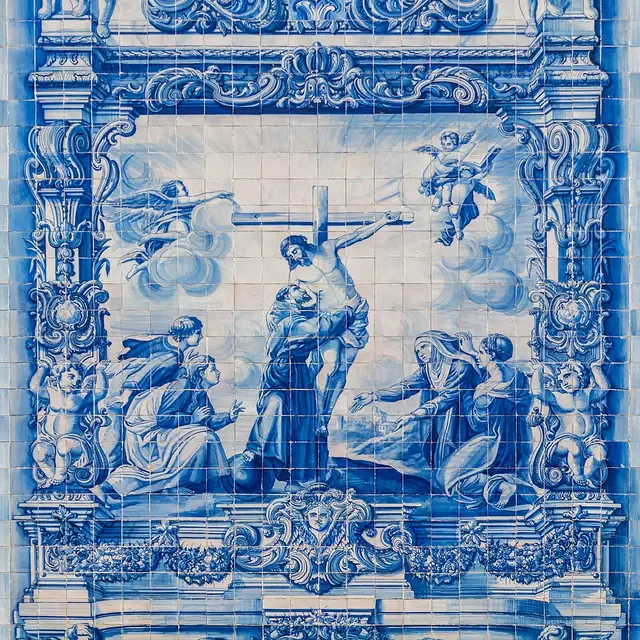
Photo: Krzysztof Golik, CC BY-SA 4.0, via Wikimedia Commons Capela das Almas
Rua de Santa Catarina, Porto, Portugal
The Capela das Almas, or Chapel of Souls, stops shoppers in their tracks on busy Rua de Santa Catarina. The Neoclassical chapel went up from the late 18th century, but its walls stayed plain white until 1929, when they were wrapped in 15,947 blue-and-white azulejo tiles covering about 360 square metres. Designed by Eduardo Leite and made in Lisbon, the tiles tell the lives of Saint Francis of Assisi and Saint Catherine.
- Built
- 1929
- Style
- Neoclassical
- Today
- Chapel
-
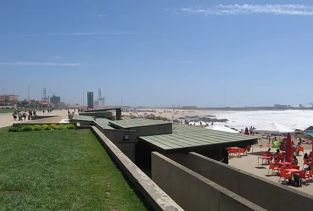
Photo: Christian Gänshirt, CC BY-SA 4.0, via Wikimedia Commons Leça Swimming Pools
Avenida da Liberdade, Leça da Palmeira, Matosinhos, Portugal
The Leça Swimming Pools are two seawater pools tucked into the rocks of the Atlantic shore at Leça da Palmeira. A young Álvaro Siza designed and built them between 1960 and 1973, laying them out in a long line parallel to the ocean and the Avenida da Liberdade. They became a national monument in 2011 and are the only Portuguese work in Thom Mayne's book 100 Buildings: 1900-2000. They open each summer, from June to September.
- Built
- 1973
- Architect
- Álvaro Siza
- Today
- Public swimming pools
-
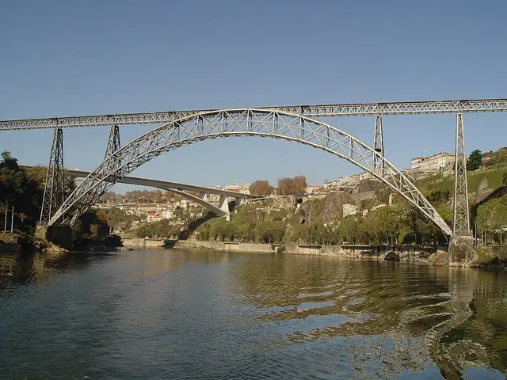
Photo: Joseolgon, Public domain, via Wikimedia Commons Maria Pia Bridge
Douro River, Porto, Portugal
The Maria Pia Bridge is a wrought-iron crescent arch built in 1877 by the firm of Gustave Eiffel, with Théophile Seyrig. Its 160-metre central span was the longest single arch in the world at the time, because the fast, deep Douro ruled out piers in the river. Eiffel won the job with the cheapest of four designs. It carried the Lisbon to Porto railway until 1991 and now stands unused, 60 metres above the water.
- Built
- 1877
- Architect
- Gustave Eiffel and Théophile Seyrig
- Height
- 60 m (197 ft)
- Today
- Disused landmark
-
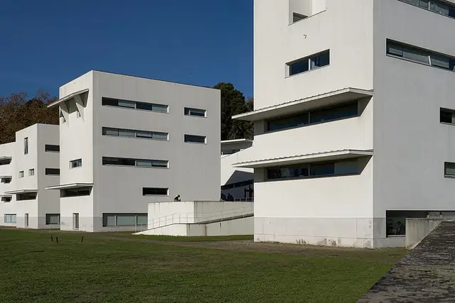
Photo: Rob Oo from NL, CC BY 4.0, via Wikimedia Commons Faculty of Architecture (FAUP)
Via Panorâmica, Porto, Portugal
The Faculty of Architecture of the University of Porto is the home of the Porto School of architecture, and its campus is a lesson in itself. Álvaro Siza, who taught there, designed it on the Campo Alegre slope above the Douro, building it in phases from the mid-1980s. A long block to the north shields a courtyard from traffic, while four separate four-storey studio towers face the river. It is part of the UNESCO nomination for Siza's works.
- Built
- 1996
- Architect
- Álvaro Siza
- Today
- University faculty
-
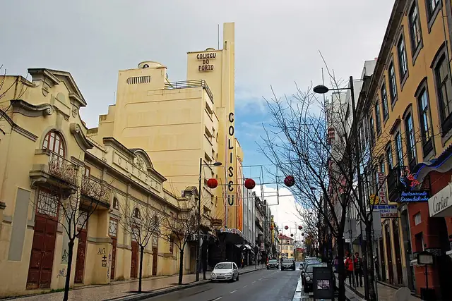
Photo: António Amen, CC BY-SA 3.0, via Wikimedia Commons Coliseu do Porto
Rua de Passos Manuel 137, Porto, Portugal
The Coliseu do Porto is one of the city's leading stages for concerts and shows, with room for 4,000 standing fans. It replaced a 1908 garden hall on Rua de Passos Manuel, and architect Cassiano Branco took over the project in 1939. It opened on 19 December 1941, and its curved, streamlined facade is a standout example of Portuguese Streamline Moderne and Art Deco design.
- Built
- 1941
- Architect
- Cassiano Branco
- Style
- Streamline Moderne
- Today
- Theatre and concert venue
-
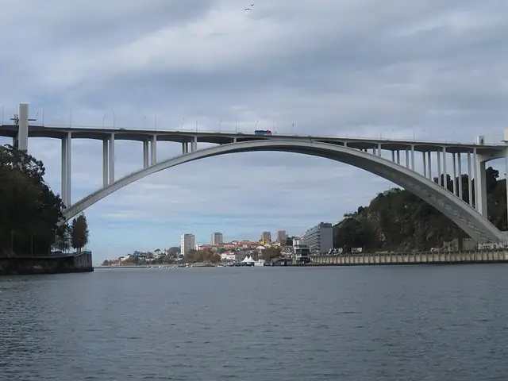
Photo: NH53, CC BY 2.0, via Wikimedia Commons Arrábida Bridge
Douro River, Porto, Portugal
The Arrábida Bridge leaps the Douro near its mouth in a single concrete arch. Engineer Edgar Cardoso designed it, building began in 1957 and it opened on 22 June 1963. Its 270-metre main span was then the longest of any concrete arch bridge in the world, and it now carries six lanes of traffic between Porto and Vila Nova de Gaia. Since 2016, visitors on guided climbs have been able to walk over the top of the arch.
- Built
- 1963
- Architect
- Edgar Cardoso
- Height
- 70 m (230 ft)
- Today
- Road bridge

.jpg){kind=link}


.jpg){kind=link}
.jpg){kind=link}
.jpg){kind=link}
.jpg){kind=link}

.jpg){kind=link}


.jpg){kind=link}

.jpg){kind=link}
The app's quiz · 10 questions
How well do you know Porto?
The same quiz as in Stamped!: name the landmark, its architect, its style or the year it was finished. Every round is different.
Know Porto well?
Locals know their city best. Suggest a landmark we're missing, a fix to one we have, or share your own photo of one. Every suggestion is checked before it goes into the app.
More cities in Europe
- Amsterdam
- Antwerp
- Athens
- Barcelona
- Bath
- Berlin
- Bilbao
- Brussels
- Budapest
- Copenhagen
- Cork
- Dublin
- Edinburgh
- Florence
- Glasgow
- Granada
- Hamburg
- Helsinki
- Istanbul
- Kraków
- Lisbon
- London
- Madrid
- Marseille
- Milan
- Munich
- Naples
- Nice
- Oslo
- Paris
- Prague
- Reykjavik
- Riga
- Rome
- Rotterdam
- Salzburg
- Seville
- St. Petersburg
- Stockholm
- Tbilisi
- Valencia
- Venice
- Vienna
- Warsaw
- Zurich
Stamp all 15 in Stamped!
Fly through Porto in photoreal 3D, take its 10-question quiz, plan your days and earn a passport stamp at every landmark. Free on iPhone, iPad, Mac and Apple Vision Pro.
Download on theApp StoreEnjoying the guides? Leave a tip to help keep new cities coming.